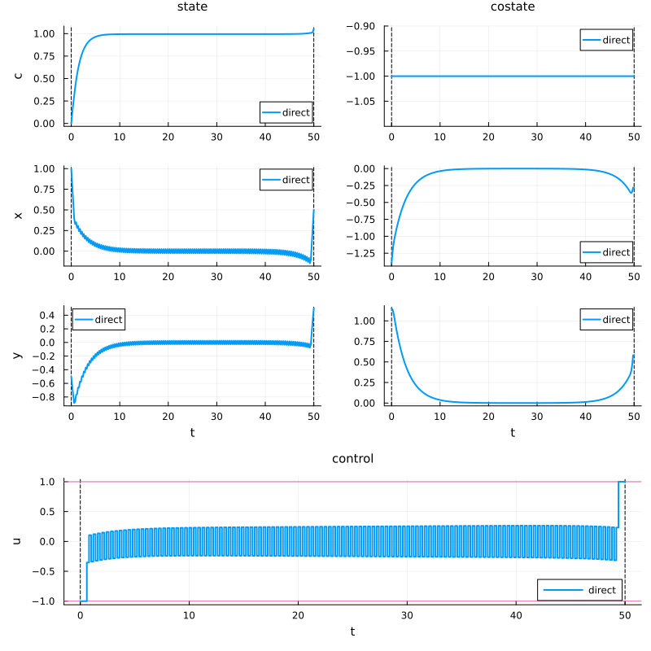
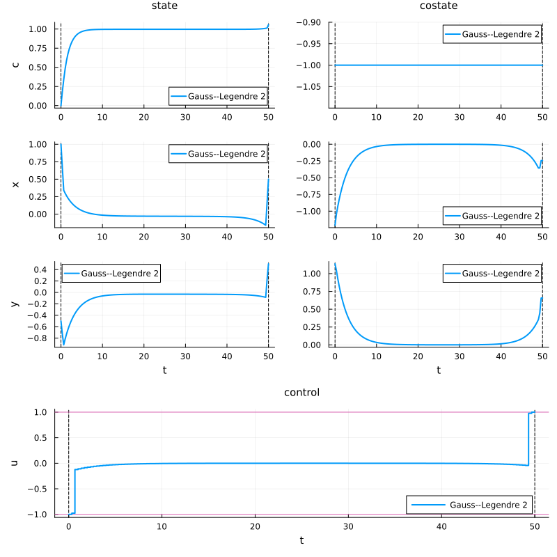
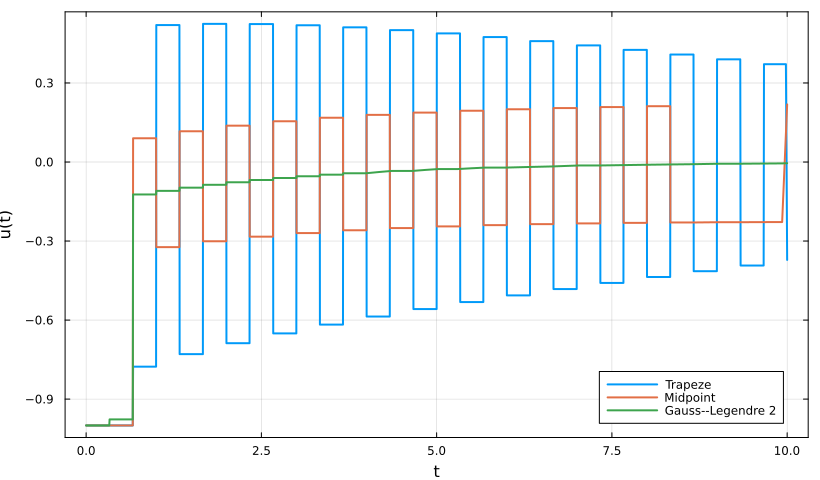
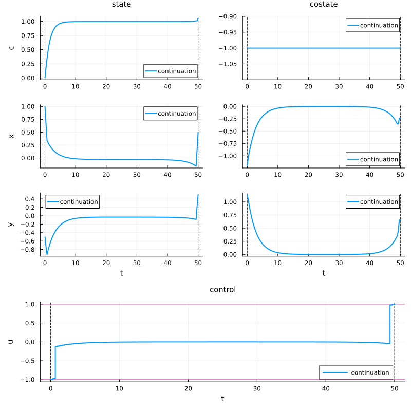
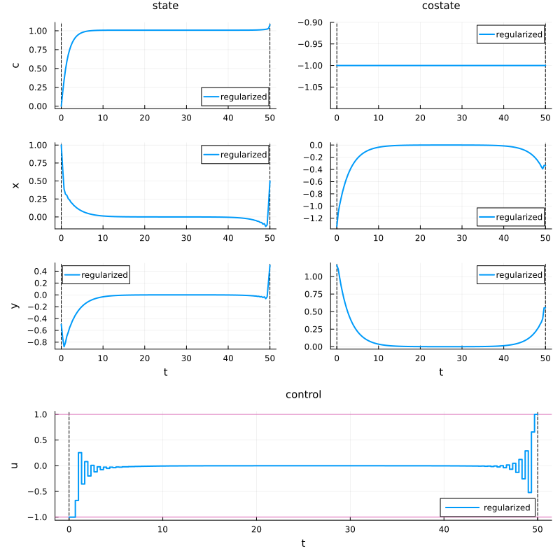
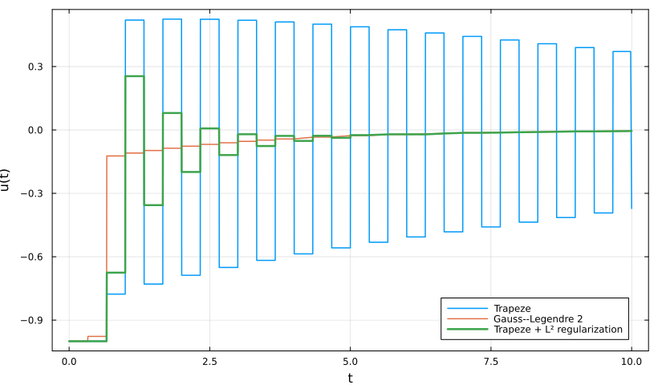

Direct methods
We now solve the turnpike optimal control problem using a direct transcription method. The continuous-time problem is discretized on a time grid, and the resulting finite-dimensional nonlinear programming problem is solved numerically.
Recall that the problem is
\[\left\{ \begin{array}{ll} \displaystyle \min_{x,y,u} J(x,y,u) \coloneqq \frac{1}{2}\int_0^T \left(x^2(t) + y^2(t)\right)\,\mathrm dt, \\[1em] \dot x(t) = u(t), \\[0.5em] \displaystyle \dot y(t) = u(t) - \frac{y(t)}{2}, \\[0.5em] -M \leq u(t) \leq M, \\[0.5em] (x(0), y(0)) = (1, -0.5), \qquad (x(T), y(T)) = (0.5, 0.5). \end{array} \right.\]
The associated stationary problem is
\[\min_{(x,y,u)} \left\{ x^2 + y^2 \;\middle|\; (x,y,u) \in \mathbb R^2 \times [-M,M], \quad u = 0, \quad u - \frac{y}{2} = 0 \right\}.\]
Hence the static solution is
\[(x^\star, y^\star, u^\star) = (0,0,0).\]
For large final time T, we expect the optimal trajectory to display the turnpike property: it rapidly approaches the static equilibrium, remains close to it for most of the time interval, and then leaves it to satisfy the terminal constraint.
Packages
using OptimalControl
using NLPModelsIpopt
using PlotsAuxiliary formulation
To use a terminal cost, we introduce an auxiliary state c such that
\[\dot c(t) = \frac{1}{2}\left(x^2(t) + y^2(t)\right), \qquad c(0)=0.\]
Then minimizing
\[\frac{1}{2}\int_0^T \left(x^2(t)+y^2(t)\right)\,\mathrm dt\]
is equivalent to minimizing c(T).
We define
\[s(t) = (c(t),x(t),y(t)).\]
The dynamics can be written as
\[\dot s(t) = F_0(s(t)) + u(t)F_1(s(t)),\]
where
\[F_0(s) = \begin{pmatrix} \frac{1}{2}(x^2+y^2) \\ 0 \\ -\frac{y}{2} \end{pmatrix}, \qquad F_1(s) = \begin{pmatrix} 0 \\ 1 \\ 1 \end{pmatrix}.\]
Notice that the last component of F_1 is 1 because the dynamics is
\[\dot y(t) = u(t) - \frac{y(t)}{2}.\]
Problem data
T = 50.0
M = 1.0
s0 = [0.0, 1.0, -0.5]
xT = 0.5
yT = 0.5
nothingF0(s) = [
0.5 * (s[2]^2 + s[3]^2),
0.0,
-s[3] / 2,
]
F1(s) = [
0.0,
1.0,
1.0,
]
nothingOCP definition
We define the optimal control problem using the OptimalControl.jl DSL.
ocp = @def begin
t ∈ [0, T], time
s = (c, x, y) ∈ R³, state
u ∈ R, control
s(0) == s0
x(T) == xT
y(T) == yT
-M ≤ u(t) ≤ M
ṡ(t) == F0(s(t)) + u(t) * F1(s(t))
c(T) → min
end
nothingDirect solve
We first solve the problem with the default direct transcription method.
direct_sol = solve(ocp)
nothing▫ This is OptimalControl 2.0.4, solving with: collocation → adnlp → ipopt (cpu)
📦 Configuration:
├─ Discretizer: collocation
├─ Modeler: adnlp
└─ Solver: ipopt
▫ This is Ipopt version 3.14.19, running with linear solver MUMPS 5.8.2.
Number of nonzeros in equality constraint Jacobian...: 3255
Number of nonzeros in inequality constraint Jacobian.: 0
Number of nonzeros in Lagrangian Hessian.............: 1002
Total number of variables............................: 1003
variables with only lower bounds: 0
variables with lower and upper bounds: 250
variables with only upper bounds: 0
Total number of equality constraints.................: 755
Total number of inequality constraints...............: 0
inequality constraints with only lower bounds: 0
inequality constraints with lower and upper bounds: 0
inequality constraints with only upper bounds: 0
iter objective inf_pr inf_du lg(mu) ||d|| lg(rg) alpha_du alpha_pr ls
0 1.0000000e-01 9.00e-01 1.24e-02 0.0 0.00e+00 - 0.00e+00 0.00e+00 0
1 -2.1375618e+00 1.13e-01 3.09e-01 -6.0 2.29e+00 - 6.86e-01 1.00e+00h 1
2 -2.6170937e+00 3.67e-02 1.09e-02 -1.5 1.06e+00 - 9.74e-01 1.00e+00h 1
3 1.0586253e+00 4.58e-03 1.10e-05 -2.3 3.71e+00 - 1.00e+00 1.00e+00h 1
4 1.0630356e+00 1.98e-03 8.27e-03 -3.8 3.00e-01 - 8.17e-01 1.00e+00h 1
5 1.0582532e+00 6.45e-04 4.50e-03 -4.7 4.11e-01 - 7.94e-01 1.00e+00h 1
6 1.0545864e+00 2.11e-04 2.15e-03 -5.5 3.26e-01 - 7.70e-01 1.00e+00h 1
7 1.0534492e+00 2.57e-05 6.14e-04 -5.6 1.37e-01 - 8.19e-01 1.00e+00h 1
8 1.0531979e+00 2.86e-06 5.25e-06 -5.9 7.87e-02 - 9.93e-01 1.00e+00h 1
9 1.0531751e+00 1.36e-07 2.45e-07 -7.0 1.06e-01 - 9.96e-01 1.00e+00h 1
iter objective inf_pr inf_du lg(mu) ||d|| lg(rg) alpha_du alpha_pr ls
10 1.0531740e+00 3.06e-08 2.22e-16 -8.0 1.29e-01 - 1.00e+00 1.00e+00h 1
11 1.0531739e+00 3.74e-09 3.60e-08 -9.3 1.38e-01 - 9.95e-01 1.00e+00h 1
12 1.0531741e+00 7.53e-11 2.22e-16 -11.0 2.34e-02 - 1.00e+00 1.00e+00h 1
Number of Iterations....: 12
(scaled) (unscaled)
Objective...............: 1.0531741339573568e+00 1.0531741339573568e+00
Dual infeasibility......: 2.2204460492503131e-16 2.2204460492503131e-16
Constraint violation....: 7.5279338318523514e-11 7.5279338318523514e-11
Variable bound violation: 9.8339425491644761e-09 9.8339425491644761e-09
Complementarity.........: 9.2994826784649494e-11 9.2994826784649494e-11
Overall NLP error.......: 9.2994826784649494e-11 9.2994826784649494e-11
Number of objective function evaluations = 13
Number of objective gradient evaluations = 13
Number of equality constraint evaluations = 13
Number of inequality constraint evaluations = 0
Number of equality constraint Jacobian evaluations = 13
Number of inequality constraint Jacobian evaluations = 0
Number of Lagrangian Hessian evaluations = 12
Total seconds in IPOPT = 6.586
EXIT: Optimal Solution Found.plt_direct = plot(
direct_sol;
label = "direct",
size = (800, 800),
)
plt_direct
Integration schemes and continuation
Direct methods rely on a discretization of the dynamics on a time grid
\[t_0 < t_1 < \cdots < t_N.\]
Several integration schemes are available.
| Symbol | Method | Order |
|---|---|---|
:euler | Explicit Euler | 1 |
:trapeze | Trapezoidal rule | 2 |
:midpoint | Implicit midpoint | 2 |
:gauss_legendre_2 | Gauss–Legendre, 2 stages | 4 |
:gauss_legendre_3 | Gauss–Legendre, 3 stages | 6 |
A useful numerical strategy is continuation. One solves a sequence of increasingly accurate problems, using each solution as a warm start for the next one:
\[(N_1,\varepsilon_1) \longrightarrow (N_2,\varepsilon_2) \longrightarrow \cdots \longrightarrow (N_k,\varepsilon_k), \qquad N_1 < \cdots < N_k, \qquad \varepsilon_1 > \cdots > \varepsilon_k.\]
We now compare three discretization schemes.
sol_trapeze = solve(
ocp;
grid_size = 150,
scheme = :trapeze,
tol = 1e-8,
init = direct_sol,
)
sol_midpoint = solve(
ocp;
grid_size = 150,
scheme = :midpoint,
tol = 1e-8,
init = direct_sol,
)
sol_gauss2 = solve(
ocp;
grid_size = 150,
scheme = :gauss_legendre_2,
tol = 1e-8,
init = direct_sol,
)
nothing▫ This is OptimalControl 2.0.4, solving with: collocation → adnlp → ipopt (cpu)
📦 Configuration:
├─ Discretizer: collocation (grid_size = 150, scheme = trapeze)
├─ Modeler: adnlp
└─ Solver: ipopt (tol = 1.0e-8)
▫ This is Ipopt version 3.14.19, running with linear solver MUMPS 5.8.2.
Number of nonzeros in equality constraint Jacobian...: 2405
Number of nonzeros in inequality constraint Jacobian.: 0
Number of nonzeros in Lagrangian Hessian.............: 302
Total number of variables............................: 604
variables with only lower bounds: 0
variables with lower and upper bounds: 151
variables with only upper bounds: 0
Total number of equality constraints.................: 455
Total number of inequality constraints...............: 0
inequality constraints with only lower bounds: 0
inequality constraints with lower and upper bounds: 0
inequality constraints with only upper bounds: 0
iter objective inf_pr inf_du lg(mu) ||d|| lg(rg) alpha_du alpha_pr ls
0 1.0531741e+00 1.13e-01 2.04e-02 0.0 0.00e+00 - 0.00e+00 0.00e+00 0
1 9.7765283e-01 7.09e-03 1.15e-01 -6.0 2.10e-01 - 8.05e-01 1.00e+00h 1
2 1.2333540e+00 5.16e-04 4.05e-02 -6.7 2.56e-01 - 8.97e-01 1.00e+00h 1
3 1.0282352e+00 1.70e-03 2.22e-16 -2.5 2.45e-01 - 1.00e+00 1.00e+00f 1
4 1.0659368e+00 2.28e-04 1.00e-03 -3.5 2.69e-01 - 9.13e-01 1.00e+00h 1
5 1.0777498e+00 7.62e-05 4.55e-04 -4.4 2.36e-01 - 9.22e-01 1.00e+00h 1
6 1.0774887e+00 3.02e-05 3.05e-04 -5.3 2.42e-01 - 8.86e-01 1.00e+00h 1
7 1.0774104e+00 9.70e-06 1.04e-05 -5.5 2.28e-01 - 9.92e-01 1.00e+00h 1
8 1.0773749e+00 3.19e-06 2.22e-16 -6.4 2.17e-01 - 1.00e+00 1.00e+00h 1
9 1.0773769e+00 6.60e-07 6.52e-07 -7.4 1.55e-01 - 9.97e-01 1.00e+00h 1
iter objective inf_pr inf_du lg(mu) ||d|| lg(rg) alpha_du alpha_pr ls
10 1.0773832e+00 5.30e-08 2.22e-16 -8.7 5.36e-02 - 1.00e+00 1.00e+00h 1
11 1.0773838e+00 7.21e-10 2.22e-16 -11.0 7.57e-03 - 1.00e+00 1.00e+00h 1
Number of Iterations....: 11
(scaled) (unscaled)
Objective...............: 1.0773837561421777e+00 1.0773837561421777e+00
Dual infeasibility......: 2.2204460492503131e-16 2.2204460492503131e-16
Constraint violation....: 7.2079431312488396e-10 7.2079431312488396e-10
Variable bound violation: 9.7066277238155863e-09 9.7066277238155863e-09
Complementarity.........: 7.2858855889267902e-10 7.2858855889267902e-10
Overall NLP error.......: 7.2858855889267902e-10 7.2858855889267902e-10
Number of objective function evaluations = 12
Number of objective gradient evaluations = 12
Number of equality constraint evaluations = 12
Number of inequality constraint evaluations = 0
Number of equality constraint Jacobian evaluations = 12
Number of inequality constraint Jacobian evaluations = 0
Number of Lagrangian Hessian evaluations = 11
Total seconds in IPOPT = 2.734
EXIT: Optimal Solution Found.
▫ This is OptimalControl 2.0.4, solving with: collocation → adnlp → ipopt (cpu)
📦 Configuration:
├─ Discretizer: collocation (grid_size = 150, scheme = midpoint)
├─ Modeler: adnlp
└─ Solver: ipopt (tol = 1.0e-8)
▫ This is Ipopt version 3.14.19, running with linear solver MUMPS 5.8.2.
Number of nonzeros in equality constraint Jacobian...: 1955
Number of nonzeros in inequality constraint Jacobian.: 0
Number of nonzeros in Lagrangian Hessian.............: 602
Total number of variables............................: 603
variables with only lower bounds: 0
variables with lower and upper bounds: 150
variables with only upper bounds: 0
Total number of equality constraints.................: 455
Total number of inequality constraints...............: 0
inequality constraints with only lower bounds: 0
inequality constraints with lower and upper bounds: 0
inequality constraints with only upper bounds: 0
iter objective inf_pr inf_du lg(mu) ||d|| lg(rg) alpha_du alpha_pr ls
0 1.0531741e+00 2.06e-01 3.63e-02 0.0 0.00e+00 - 0.00e+00 0.00e+00 0
1 1.0013445e+00 1.83e-02 2.39e-01 -6.0 3.93e-01 - 6.95e-01 9.11e-01h 1
2 1.2328589e+00 6.01e-04 5.02e-02 -2.6 2.32e-01 - 9.08e-01 1.00e+00h 1
3 1.0286436e+00 4.25e-03 1.44e-02 -2.5 4.24e-01 - 8.98e-01 1.00e+00f 1
4 1.0276920e+00 6.90e-04 3.48e-03 -3.2 1.82e-01 - 9.18e-01 1.00e+00h 1
5 1.0467338e+00 3.01e-04 3.10e-05 -3.6 2.22e-01 - 9.97e-01 1.00e+00h 1
6 1.0457787e+00 6.15e-05 1.79e-06 -4.5 1.42e-01 - 9.99e-01 1.00e+00h 1
7 1.0455214e+00 2.75e-06 4.99e-07 -5.7 9.08e-02 - 9.98e-01 1.00e+00h 1
8 1.0455157e+00 4.70e-07 2.92e-08 -6.8 1.03e-01 - 1.00e+00 1.00e+00h 1
9 1.0455152e+00 5.54e-08 3.33e-16 -8.1 1.28e-01 - 1.00e+00 1.00e+00h 1
iter objective inf_pr inf_du lg(mu) ||d|| lg(rg) alpha_du alpha_pr ls
10 1.0455167e+00 1.15e-09 2.22e-16 -9.8 2.48e-02 - 1.00e+00 1.00e+00h 1
Number of Iterations....: 10
(scaled) (unscaled)
Objective...............: 1.0455166725224343e+00 1.0455166725224343e+00
Dual infeasibility......: 2.2204460492503131e-16 2.2204460492503131e-16
Constraint violation....: 1.1542808930897763e-09 1.1542808930897763e-09
Variable bound violation: 7.9945459141583797e-09 7.9945459141583797e-09
Complementarity.........: 1.2969842018960228e-09 1.2969842018960228e-09
Overall NLP error.......: 1.2969842018960228e-09 1.2969842018960228e-09
Number of objective function evaluations = 11
Number of objective gradient evaluations = 11
Number of equality constraint evaluations = 11
Number of inequality constraint evaluations = 0
Number of equality constraint Jacobian evaluations = 11
Number of inequality constraint Jacobian evaluations = 0
Number of Lagrangian Hessian evaluations = 10
Total seconds in IPOPT = 0.020
EXIT: Optimal Solution Found.
▫ This is OptimalControl 2.0.4, solving with: collocation → adnlp → ipopt (cpu)
📦 Configuration:
├─ Discretizer: collocation (grid_size = 150, scheme = gauss_legendre_2)
├─ Modeler: adnlp
└─ Solver: ipopt (tol = 1.0e-8)
▫ This is Ipopt version 3.14.19, running with linear solver MUMPS 5.8.2.
Number of nonzeros in equality constraint Jacobian...: 6005
Number of nonzeros in inequality constraint Jacobian.: 0
Number of nonzeros in Lagrangian Hessian.............: 1800
Total number of variables............................: 1653
variables with only lower bounds: 0
variables with lower and upper bounds: 300
variables with only upper bounds: 0
Total number of equality constraints.................: 1355
Total number of inequality constraints...............: 0
inequality constraints with only lower bounds: 0
inequality constraints with lower and upper bounds: 0
inequality constraints with only upper bounds: 0
iter objective inf_pr inf_du lg(mu) ||d|| lg(rg) alpha_du alpha_pr ls
0 1.0531741e+00 1.09e+00 1.36e-02 0.0 0.00e+00 - 0.00e+00 0.00e+00 0
1 1.0132754e+00 5.46e-02 2.56e-02 -1.2 1.02e+00 - 1.00e+00 1.00e+00h 1
2 1.0748459e+00 2.65e-04 2.24e-03 -3.1 6.16e-02 - 9.67e-01 1.00e+00h 1
3 1.0548595e+00 3.98e-04 3.98e-05 -3.8 1.01e-01 - 9.89e-01 1.00e+00h 1
4 1.0563443e+00 9.66e-05 2.82e-05 -4.6 1.74e-01 - 9.57e-01 1.00e+00h 1
5 1.0566220e+00 5.53e-05 2.22e-16 -5.5 2.22e-01 - 1.00e+00 1.00e+00h 1
6 1.0569066e+00 1.46e-05 1.25e-05 -6.8 1.34e-01 - 9.32e-01 1.00e+00h 1
7 1.0569141e+00 2.82e-06 2.81e-06 -7.3 1.42e-01 - 9.68e-01 1.00e+00h 1
8 1.0569140e+00 3.77e-07 2.22e-16 -8.1 1.44e-01 - 1.00e+00 1.00e+00h 1
9 1.0569139e+00 3.70e-08 4.08e-08 -9.3 1.56e-01 - 9.95e-01 1.00e+00h 1
iter objective inf_pr inf_du lg(mu) ||d|| lg(rg) alpha_du alpha_pr ls
10 1.0569141e+00 8.30e-10 2.22e-16 -10.7 3.32e-02 - 1.00e+00 1.00e+00h 1
Number of Iterations....: 10
(scaled) (unscaled)
Objective...............: 1.0569140979570872e+00 1.0569140979570872e+00
Dual infeasibility......: 2.2204460492503131e-16 2.2204460492503131e-16
Constraint violation....: 8.3035417777765907e-10 8.3035417777765907e-10
Variable bound violation: 9.6176593356034346e-09 9.6176593356034346e-09
Complementarity.........: 1.4777328333742125e-10 1.4777328333742125e-10
Overall NLP error.......: 8.3035417777765907e-10 8.3035417777765907e-10
Number of objective function evaluations = 11
Number of objective gradient evaluations = 11
Number of equality constraint evaluations = 11
Number of inequality constraint evaluations = 0
Number of equality constraint Jacobian evaluations = 11
Number of inequality constraint Jacobian evaluations = 0
Number of Lagrangian Hessian evaluations = 10
Total seconds in IPOPT = 4.165
EXIT: Optimal Solution Found.plt_gauss2 = plot(
sol_gauss2;
label = "Gauss--Legendre 2",
size = (800, 800),
)
plt_gauss2
Comparison of the controls
We compare the controls obtained with the different schemes on the initial time interval.
u_trapeze(t) = control(sol_trapeze)(t)
u_midpoint(t) = control(sol_midpoint)(t)
u_gauss2(t) = control(sol_gauss2)(t)
plt_controls = plot(
u_trapeze,
0,
10;
label = "Trapeze",
linewidth = 2,
xlabel = "t",
ylabel = "u(t)",
frame = :box,
grid = true,
size = (820, 480),
)
plot!(
plt_controls,
u_midpoint,
0,
10;
label = "Midpoint",
linewidth = 2,
)
plot!(
plt_controls,
u_gauss2,
0,
10;
label = "Gauss--Legendre 2",
linewidth = 2,
)
plt_controls
Continuation example
We can also explicitly perform a continuation procedure by first solving a coarse problem and then refining the discretization.
sol_continuation = solve(
ocp;
grid_size = 50,
scheme = :midpoint,
tol = 1e-4,
)
sol_continuation = solve(
ocp;
grid_size = 150,
scheme = :gauss_legendre_2,
tol = 1e-8,
init = sol_continuation,
)
nothing▫ This is OptimalControl 2.0.4, solving with: collocation → adnlp → ipopt (cpu)
📦 Configuration:
├─ Discretizer: collocation (grid_size = 50, scheme = midpoint)
├─ Modeler: adnlp
└─ Solver: ipopt (tol = 0.0001)
▫ This is Ipopt version 3.14.19, running with linear solver MUMPS 5.8.2.
Number of nonzeros in equality constraint Jacobian...: 655
Number of nonzeros in inequality constraint Jacobian.: 0
Number of nonzeros in Lagrangian Hessian.............: 202
Total number of variables............................: 203
variables with only lower bounds: 0
variables with lower and upper bounds: 50
variables with only upper bounds: 0
Total number of equality constraints.................: 155
Total number of inequality constraints...............: 0
inequality constraints with only lower bounds: 0
inequality constraints with lower and upper bounds: 0
inequality constraints with only upper bounds: 0
iter objective inf_pr inf_du lg(mu) ||d|| lg(rg) alpha_du alpha_pr ls
0 1.0000000e-01 9.00e-01 6.02e-02 0.0 0.00e+00 - 0.00e+00 0.00e+00 0
1 -4.2756885e+00 1.46e+00 1.64e+00 -6.0 4.42e+00 - 6.14e-01 1.00e+00f 1
2 -2.0163348e+01 1.27e+00 8.19e-02 -0.9 1.61e+01 - 8.89e-01 1.00e+00f 1
3 1.0120114e+00 7.34e-03 6.83e-04 -1.7 2.12e+01 - 9.97e-01 1.00e+00h 1
4 9.7374775e-01 4.14e-03 3.70e-04 -2.4 2.83e-01 - 9.95e-01 1.00e+00h 1
5 9.5570291e-01 1.78e-03 6.89e-04 -3.2 2.78e-01 - 9.83e-01 1.00e+00h 1
6 9.4898339e-01 6.64e-04 1.03e-04 -3.9 2.83e-01 - 9.95e-01 1.00e+00h 1
7 9.4628588e-01 2.85e-04 5.19e-05 -4.7 3.51e-01 - 9.95e-01 1.00e+00h 1
8 9.4624329e-01 8.33e-05 1.65e-05 -5.6 1.93e-01 - 9.96e-01 1.00e+00h 1
Number of Iterations....: 8
(scaled) (unscaled)
Objective...............: 9.4624329267850060e-01 9.4624329267850060e-01
Dual infeasibility......: 1.6511182589749179e-05 1.6511182589749179e-05
Constraint violation....: 8.3319518470403864e-05 8.3319518470403864e-05
Variable bound violation: 0.0000000000000000e+00 0.0000000000000000e+00
Complementarity.........: 6.2463440129949279e-05 6.2463440129949279e-05
Overall NLP error.......: 8.3319518470403864e-05 8.3319518470403864e-05
Number of objective function evaluations = 9
Number of objective gradient evaluations = 9
Number of equality constraint evaluations = 9
Number of inequality constraint evaluations = 0
Number of equality constraint Jacobian evaluations = 9
Number of inequality constraint Jacobian evaluations = 0
Number of Lagrangian Hessian evaluations = 8
Total seconds in IPOPT = 0.008
EXIT: Optimal Solution Found.
▫ This is OptimalControl 2.0.4, solving with: collocation → adnlp → ipopt (cpu)
📦 Configuration:
├─ Discretizer: collocation (grid_size = 150, scheme = gauss_legendre_2)
├─ Modeler: adnlp
└─ Solver: ipopt (tol = 1.0e-8)
▫ This is Ipopt version 3.14.19, running with linear solver MUMPS 5.8.2.
Number of nonzeros in equality constraint Jacobian...: 6005
Number of nonzeros in inequality constraint Jacobian.: 0
Number of nonzeros in Lagrangian Hessian.............: 1800
Total number of variables............................: 1653
variables with only lower bounds: 0
variables with lower and upper bounds: 300
variables with only upper bounds: 0
Total number of equality constraints.................: 1355
Total number of inequality constraints...............: 0
inequality constraints with only lower bounds: 0
inequality constraints with lower and upper bounds: 0
inequality constraints with only upper bounds: 0
iter objective inf_pr inf_du lg(mu) ||d|| lg(rg) alpha_du alpha_pr ls
0 9.4624329e-01 1.29e+00 2.13e-02 0.0 0.00e+00 - 0.00e+00 0.00e+00 0
1 1.8674680e+00 9.09e-02 5.39e-02 -6.0 1.23e+00 - 8.28e-01 1.00e+00h 1
2 2.8468288e+00 2.22e-03 7.11e-02 -2.9 9.79e-01 - 7.73e-01 1.00e+00h 1
3 1.0760491e+00 1.13e-01 5.44e-02 -2.2 1.77e+00 - 4.64e-01 1.00e+00f 1
4 1.0664008e+00 9.06e-03 4.58e-03 -2.6 2.64e-01 - 8.67e-01 1.00e+00h 1
5 1.0022250e+00 4.62e-03 5.61e-04 -3.1 5.52e-01 - 9.31e-01 1.00e+00h 1
6 1.0535202e+00 7.65e-04 1.37e-04 -3.6 3.06e-01 - 9.69e-01 1.00e+00h 1
7 1.0567774e+00 2.60e-04 9.01e-06 -4.4 1.75e-01 - 9.96e-01 1.00e+00h 1
8 1.0568698e+00 6.95e-05 8.73e-05 -6.5 1.34e-01 - 8.94e-01 1.00e+00h 1
9 1.0569135e+00 1.98e-05 1.02e-05 -6.3 1.34e-01 - 9.70e-01 1.00e+00h 1
iter objective inf_pr inf_du lg(mu) ||d|| lg(rg) alpha_du alpha_pr ls
10 1.0569140e+00 5.80e-06 9.23e-08 -7.1 1.35e-01 - 9.99e-01 1.00e+00h 1
11 1.0569139e+00 1.03e-06 4.44e-16 -8.0 1.42e-01 - 1.00e+00 1.00e+00h 1
12 1.0569138e+00 9.90e-08 1.03e-08 -9.2 1.73e-01 - 9.99e-01 1.00e+00h 1
13 1.0569141e+00 1.93e-09 2.22e-16 -10.6 3.90e-02 - 1.00e+00 1.00e+00h 1
Number of Iterations....: 13
(scaled) (unscaled)
Objective...............: 1.0569140938670514e+00 1.0569140938670514e+00
Dual infeasibility......: 2.2204460492503131e-16 2.2204460492503131e-16
Constraint violation....: 1.9252776560507723e-09 1.9252776560507723e-09
Variable bound violation: 9.5609482553271619e-09 9.5609482553271619e-09
Complementarity.........: 2.2261373523662643e-10 2.2261373523662643e-10
Overall NLP error.......: 1.9252776560507723e-09 1.9252776560507723e-09
Number of objective function evaluations = 14
Number of objective gradient evaluations = 14
Number of equality constraint evaluations = 14
Number of inequality constraint evaluations = 0
Number of equality constraint Jacobian evaluations = 14
Number of inequality constraint Jacobian evaluations = 0
Number of Lagrangian Hessian evaluations = 13
Total seconds in IPOPT = 0.071
EXIT: Optimal Solution Found.plt_continuation = plot(
sol_continuation;
label = "continuation",
size = (800, 800),
)
plt_continuation
Reducing control chattering
Direct methods can sometimes produce oscillations in the control, especially near bang-bang arcs or when the discretization is coarse.
One way to reduce this numerical chattering is to add a small quadratic regularization term to the cost:
\[J_\varepsilon(x,y,u) = \frac{1}{2}\int_0^T \left(x^2(t)+y^2(t)\right) \,\mathrm dt + \varepsilon \int_0^T u^2(t)\,\mathrm dt,\]
where 0 < \varepsilon \ll 1.
In the auxiliary formulation, this corresponds to replacing the cost-state dynamics by
\[\dot c(t) = \frac{1}{2}\left(x^2(t)+y^2(t)\right) + \varepsilon u^2(t).\]
ε = 1e-3
ocp_regularized = @def begin
t ∈ [0, T], time
s = (c, x, y) ∈ R³, state
u ∈ R, control
s(0) == s0
x(T) == xT
y(T) == yT
-M ≤ u(t) ≤ M
ṡ(t) == [
0.5 * (x(t)^2 + y(t)^2) + ε * u(t)^2,
u(t),
u(t) - y(t) / 2,
]
c(T) → min
end
nothingsol_regularized = solve(
ocp_regularized;
grid_size = 150,
scheme = :trapeze,
tol = 1e-8,
init = sol_trapeze,
)
nothing▫ This is OptimalControl 2.0.4, solving with: collocation → adnlp → ipopt (cpu)
📦 Configuration:
├─ Discretizer: collocation (grid_size = 150, scheme = trapeze)
├─ Modeler: adnlp
└─ Solver: ipopt (tol = 1.0e-8)
▫ This is Ipopt version 3.14.19, running with linear solver MUMPS 5.8.2.
Number of nonzeros in equality constraint Jacobian...: 2405
Number of nonzeros in inequality constraint Jacobian.: 0
Number of nonzeros in Lagrangian Hessian.............: 453
Total number of variables............................: 604
variables with only lower bounds: 0
variables with lower and upper bounds: 151
variables with only upper bounds: 0
Total number of equality constraints.................: 455
Total number of inequality constraints...............: 0
inequality constraints with only lower bounds: 0
inequality constraints with lower and upper bounds: 0
inequality constraints with only upper bounds: 0
iter objective inf_pr inf_du lg(mu) ||d|| lg(rg) alpha_du alpha_pr ls
0 1.0773838e+00 3.33e-03 2.01e-02 0.0 0.00e+00 - 0.00e+00 0.00e+00 0
1 1.0887151e+00 5.25e-06 2.45e-03 -6.0 1.13e-02 - 9.67e-01 1.00e+00h 1
2 1.0880872e+00 2.44e-06 1.10e-03 -7.5 5.35e-03 - 9.70e-01 1.00e+00h 1
3 1.0799207e+00 1.34e-04 2.22e-16 -3.6 4.18e-01 - 1.00e+00 1.00e+00f 1
4 1.0789016e+00 1.61e-05 3.74e-05 -4.3 2.20e-01 - 9.58e-01 1.00e+00h 1
5 1.0792319e+00 2.86e-06 2.22e-16 -5.4 9.28e-02 - 1.00e+00 1.00e+00h 1
6 1.0793628e+00 7.87e-08 1.64e-08 -7.4 1.54e-02 - 1.00e+00 1.00e+00h 1
7 1.0793665e+00 3.27e-11 2.22e-16 -11.0 3.14e-04 - 1.00e+00 1.00e+00h 1
Number of Iterations....: 7
(scaled) (unscaled)
Objective...............: 1.0793665366463014e+00 1.0793665366463014e+00
Dual infeasibility......: 2.2204460492503131e-16 2.2204460492503131e-16
Constraint violation....: 3.2721159115567389e-11 3.2721159115567389e-11
Variable bound violation: 9.7211265703833760e-09 9.7211265703833760e-09
Complementarity.........: 8.6114574986230013e-11 8.6114574986230013e-11
Overall NLP error.......: 8.6114574986230013e-11 8.6114574986230013e-11
Number of objective function evaluations = 8
Number of objective gradient evaluations = 8
Number of equality constraint evaluations = 8
Number of inequality constraint evaluations = 0
Number of equality constraint Jacobian evaluations = 8
Number of inequality constraint Jacobian evaluations = 0
Number of Lagrangian Hessian evaluations = 7
Total seconds in IPOPT = 2.606
EXIT: Optimal Solution Found.plt_regularized = plot(
sol_regularized;
label = "regularized",
size = (800, 800),
)
plt_regularized
We now compare the regularized control with the controls obtained before.
u_regularized(t) = control(sol_regularized)(t)
plt_regularized_control = plot(
u_trapeze,
0,
10;
label = "Trapeze",
linewidth = 1.5,
xlabel = "t",
ylabel = "u(t)",
frame = :box,
grid = true,
size = (820, 480),
)
plot!(
plt_regularized_control,
u_gauss2,
0,
10;
label = "Gauss--Legendre 2",
linewidth = 1.5,
)
plot!(
plt_regularized_control,
u_regularized,
0,
10;
label = "Trapeze + L² regularization",
linewidth = 2.5,
)
plt_regularized_control
The regularized problem is not exactly the same optimal control problem, since the objective has been modified. However, for small values of \varepsilon, it is often useful as a numerical device to obtain smoother controls or better warm starts.